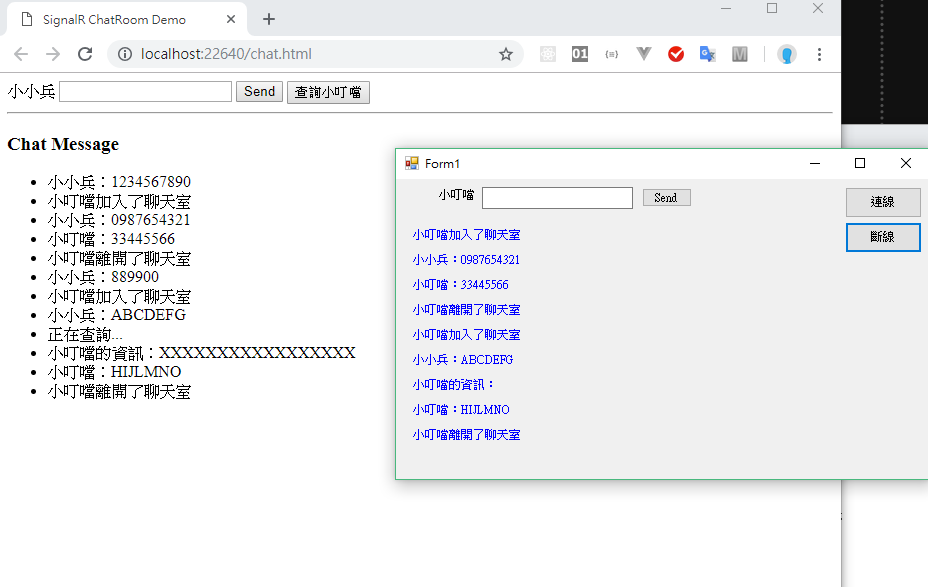

透過 SignalR 製作一個可以即時通知給 Web 的練習專案，並且讓 Winform 也可以用
透過網頁聊天室的範例練習 SignalR，GitHub Sample

nuget 安裝 SignalR 套件
1 | install-package Microsoft.AspNet.SignalR |
設定 OWIN，建立 OWIN 啟動類別
1 | [] |
建立 server 端的 Hub
繼承 Microsoft.AspNet.SignalR.Hub，並建立自訂的方法，例如當 Client 端發送資料給 Server 端，Server 端應如何處理
1 | public class ChatHub : Microsoft.AspNet.SignalR.Hub |
Client 端頁面 javascript 程式
範例採用聊天室，送出訊息給 Hub 再由 Hub 傳遞給每一個 Client，而其他的 Client 接到資料後要可以將訊息呈現出來
1 | <body> |
1 | // chat.js |
WinForm 也加入聊天室
需要指定 Winform 要跟哪個 Hub 互動，這個部分就在 form 一開始的時候先指定，所以先宣告兩個 private 變數存放 HubConnection 以及 IHubProxy，連線開始需要指定 SignalR 的網址，另外我們也會希望再連線收到資料的時候進行處理，因此在 HubConnection 的 Received 加入委派來處理
先將收到的字串轉為 dynamic 物件，範例如下，在依據呼叫的 Hub 名稱、方法名稱或內容來做其他處理
Hub 傳遞的 Json 格式
1 | { |
參考資料
- http://weisnote.blogspot.com/2012/08/signalr-webform-winform.html
- https://docs.microsoft.com/zh-tw/aspnet/signalr/overview/getting-started/tutorial-getting-started-with-signalr
- https://code.msdn.microsoft.com/SignalR-Getting-Started-b9d18aa9
- https://dotblogs.com.tw/hatelove/archive/2012/07/01/signalr-introduction-about-realtime-website.aspx